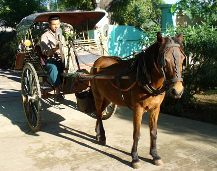

|
Did someone mention Horse Cart? Here’s my driver, patiently waiting for me to get ready. The last full day in Bagan was spent visiting the outlying areas on horse cart. Actually, we went down the same road biked at dusk the day before, but now my driver acted as a guide, taking me to the more important structures. It was nice having a guide so conversant in English. After graduating from school, Zahmin moved to Mandalay and worked as a guide up there for two years before returning home to the Bagan area and his family. We finished early, so he was free to go in plenty of time to pick up another fare for a sunset excursion. He rents the horse and rig, in a deal where the owner gets a fixed amount (~75%) for half day, full day, and sunset fares. No fare, no pay. On the way back to my guesthouse, he points out the horse-cart driver education school he attended. |
 For instance, how do you transport thousands of pilgrims a day, 15 km up a mountain road to visit an important Buddhist temple and Nat shrine? At Kyaitkiyo, Myanmar you bolt 8 rows of 2 x 6 benches to the bed of a 4x4 stake truck, and charge $1.50 each way per person. The truck is ready to leave when it has 6 paying passengers per row, plus another 5 in the cab paying double. As the trucks travel in convoy over a narrow, one way road, we wait another 90 minutes after "filling up" for the road to open for travel in our direction. Fortunately, our truck was parked under a canopy.
For instance, how do you transport thousands of pilgrims a day, 15 km up a mountain road to visit an important Buddhist temple and Nat shrine? At Kyaitkiyo, Myanmar you bolt 8 rows of 2 x 6 benches to the bed of a 4x4 stake truck, and charge $1.50 each way per person. The truck is ready to leave when it has 6 paying passengers per row, plus another 5 in the cab paying double. As the trucks travel in convoy over a narrow, one way road, we wait another 90 minutes after "filling up" for the road to open for travel in our direction. Fortunately, our truck was parked under a canopy.